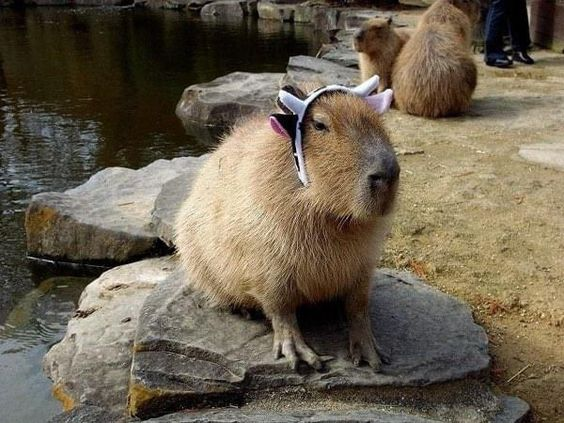
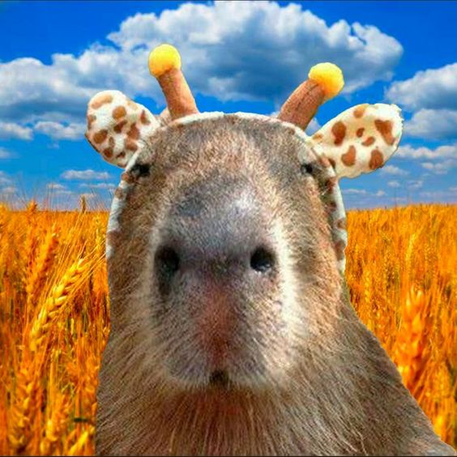
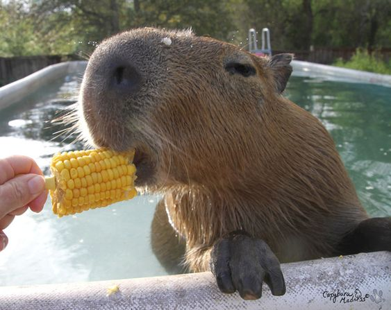
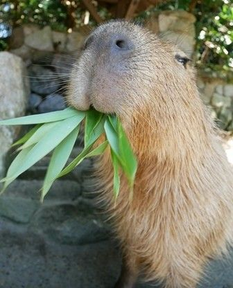
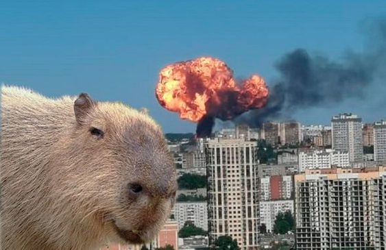

Капібара
Зміст
- Етимологія
- Зовнішній вигляд
- Розповсюдження
- Спосіб життя та харчування
- Капібара в історії
- Одомашнення
Етимологія
Назва тварини бере початок від слова ka'apiûara, що мертвою мовою тупи (родичною мовою індіанців гуарані) буквально означає «їдник тонкої трави» (kaá (трава) + píi (тонкий) + ú (є) + ara (суфікс, аналогічний російській) суфікс-тель)). У найбільш близькій до оригіналу формі capivara воно увійшло в португальську мову і широко застосовується в Бразилії. Вже у формі capibara через іспанське слово увійшло до англійської, російської, японської та інших мов. У іспаномовних країнах Латинської Америки також у ході й інші назви, що походять з мов місцевих індіанців: carpincho (Аргентина, Перу та ін), chigüiro (Венесуела, Колумбія), jochi (Болівія), ñeque (Колумбія) та ін.
Наукова назва (як родова, так і видова) Hydrochoerus hydrochaeris перекладається як «водяна свиня» (др.-грец. ὕδωρ - вода + χοῖρος - свиня), калька з якого послужила основою як для альтернативного російського найменування цієї тварини - водосвинка і назв його китайською (水豚), угорською (Vízidisznó), ісландською (Flóðsvín) та деяких інших мовах, а також для варіантів, що вживаються в Аргентині (chancho de agua і puerco de agua) .
Зовнішній вигляд
Довжина тіла дорослої капібари досягає 1-1,35 м, висота в загривку - 50-60 см. Самці важать 34-63 кг, а самки - 36-65,5 кг (вимірювання зроблено у венесуельських льяносах). Самки, як правило, більші за самців.
Статура важка. Зовні капібар нагадує гігантську великоголову морську свинку. Голова велика, масивна з широкою тупою мордою. Верхня губа товста. Вуха короткі, округлі. Ніздрі широко розставлені. Очі маленькі, розташовані високо на голові та віднесені кілька тому. Хвіст рудиментарний. Кінцівки досить короткі; передні - 4-палі (пальців було шість), задні - 3-палі. Пальці з'єднані невеликими плавальними перетинками і мають короткі сильні пазурі. Тіло вкрите довгим (30-120 мм) і жорстким волоссям; підшерсток відсутній. Забарвлення верхньої сторони тіла від рудувато-бурого до сірого, черевної, як правило, жовтувато-буре. Молодняк пофарбований світліше. У статевозрілих самців на верхній частині морди розташована ділянка шкіри з численними великими сальними залозами. У самок є 6 пар черевних сосків.
Череп масивний, з широкими та сильними вилицьовими дугами. Зубів 20. Щічні зуби без коріння, ростуть протягом усього життя тварини. Різці широкі, мають поздовжню борозенку на зовнішній поверхні. Мала і велика гомілкові кістки частково зростаються між собою. Ключиці немає. Хромосом у диплоїдному наборі 66.
Розповсюдження
Капібара зустрічається по берегах різноманітних водойм у тропічних і помірних частинах Центральної та Південної Америки, на схід від Анд — від Панами до Уругваю і північного сходу Аргентини (до 38°17' пд. ш., провінція Буенос-Айрес).
Відзначено у таких країнах: Аргентина, Болівія, Бразилія, Венесуела, Гайана, Колумбія, Парагвай, Перу, Уругвай, Французька Гвіана. Область поширення включає басейни рік Оріноко, Амазонки та Ла-Плати. Основними факторами, що обмежують поширення, є температура повітря та води. Капібари зустрічаються в горах до висоти 1300 м-коду над рівнем моря
В 1991 карликовий різновид капібари - малу водосвинку (Hydrochoerus isthmius Goldman, 1912) - визнали окремим видом. Вона зустрічається від північної Панами до Колумбії та північно-західної Венесуели. За розмірами мала водосвинка помітно менше звичайної капібари.
У копалині представники сімейства водосвинкових відомі з верхнього міоцену, а представники підродини Hydrochoerinae, якому належить капібара, - з верхнього пліоцену. Усі види сімейства були поширені виключно у Південній та Північній Америці.
Спосіб життя та харчування
Веде напівводний спосіб життя; від води рідко видаляється більш ніж 500—1000 м. Її поширення пов'язане з сезонними коливаннями рівня води - під час сезону дощів капібари розсіюються по території, у сухий сезон скупчуються по берегах великих річок та інших постійних водойм і найчастіше проходять у пошуках води та їжі значні відстані.
Ці гризуни зазвичай активні вдень, але якщо їх часто турбують люди та хижаки, то переходять на нічний спосіб життя(здається, всі ми капібари🤔).
Капібара чудово плаває та пірнає; високе розташування на голові очей, вух та ніздрів дозволяє їй при плаванні тримати їх над водою.
Харчування у капібари на волі включає плоди і бульби, сіно і траву, водні рослини.
 Капібара в історії
За поширеною легендою, у XVI столітті Католицька церква віднесла капібару до «риби», що дозволило їсти їхнє м'ясо як пісний продукт. В цій якості воно стало популярним у деяких частинах Південної Америки, зокрема, у Венесуелі. А полювання на тварин набуло небаченого масштабу
